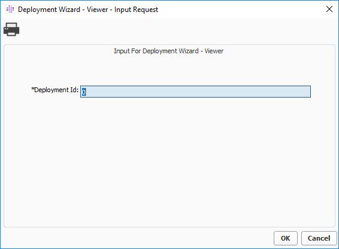
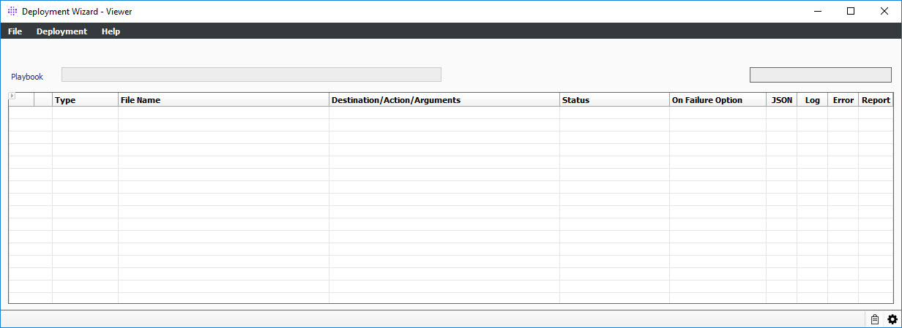

The Deployment Wizard – Viewer panel allows you to load and review prior deployment audit logs associated with those deployments.
All of the same information is available on the Viewer panel as per the Runner panel, which include logs, icons and color coded deployment and step statuses.
Note: There are multiple ways to access this window; however, only one way is defined because some features can only be accessed via this procedure.
1. From OpenLink Central, right-click anywhere on the header and select Launch Available Services. The Launch Available Services window displays.
2. Type Deployment Wizard in the Filter Service field, select Deployment Wizard - Viewer in the Available Services panel, and then click Launch. The following window displays:


This window contains the following menu items specific to the Deployment Wizard Viewer:
Menu |
Item |
Description |
| Deployment | Additional Information | Provides additional information such as Client Site ID, Deployment Version, and Deployment Description |
|
Review Previous Deployment |
This menu item will invoke the Viewer to allow you to review the latest deployment performed on this system. |
|
Review Any Deployment | This menu item will allow you to select any deployment performed on this system and invoke the Viewer to review. |
| Help | Deployment Wizard - Playbook Viewer |
Launches this help file. |
About |
Opens the About window. |